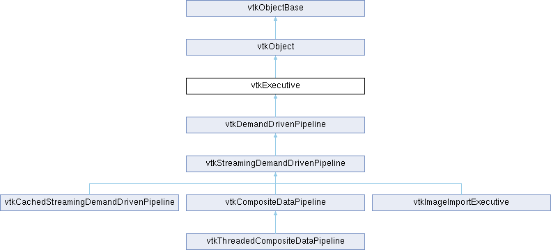

|
Etrek
|
|
Etrek
|
Superclass for all pipeline executives in VTK. More...
#include <vtkExecutive.h>

Public Types | |
| enum | { RequestUpstream , RequestDownstream } |
| enum | { BeforeForward , AfterForward } |
Public Member Functions | |
| vtkTypeMacro (vtkExecutive, vtkObject) | |
| void | PrintSelf (ostream &os, vtkIndent indent) override |
| vtkAlgorithm * | GetAlgorithm () |
| virtual vtkTypeBool | ProcessRequest (vtkInformation *request, vtkInformationVector **inInfo, vtkInformationVector *outInfo) |
| virtual int | ComputePipelineMTime (vtkInformation *request, vtkInformationVector **inInfoVec, vtkInformationVector *outInfoVec, int requestFromOutputPort, vtkMTimeType *mtime) |
| virtual int | UpdateInformation () |
| int | GetNumberOfInputConnections (int port) |
| virtual vtkInformation * | GetOutputInformation (int port) |
| vtkInformationVector * | GetOutputInformation () |
| vtkInformation * | GetInputInformation (int port, int connection) |
| vtkInformationVector * | GetInputInformation (int port) |
| vtkInformationVector ** | GetInputInformation () |
| vtkExecutive * | GetInputExecutive (int port, int connection) |
| virtual int | CallAlgorithm (vtkInformation *request, int direction, vtkInformationVector **inInfo, vtkInformationVector *outInfo) |
| virtual vtkTypeBool | Update () |
| virtual vtkTypeBool | Update (int port) |
| int | GetNumberOfInputPorts () |
| int | GetNumberOfOutputPorts () |
| virtual vtkDataObject * | GetOutputData (int port) |
| virtual void | SetOutputData (int port, vtkDataObject *, vtkInformation *info) |
| virtual void | SetOutputData (int port, vtkDataObject *) |
| virtual vtkDataObject * | GetInputData (int port, int connection) |
| virtual vtkDataObject * | GetInputData (int port, int connection, vtkInformationVector **inInfoVec) |
| void | SetSharedInputInformation (vtkInformationVector **inInfoVec) |
| void | SetSharedOutputInformation (vtkInformationVector *outInfoVec) |
| bool | UsesGarbageCollector () const override |
| Public Member Functions inherited from vtkObject | |
| vtkBaseTypeMacro (vtkObject, vtkObjectBase) | |
| virtual void | DebugOn () |
| virtual void | DebugOff () |
| bool | GetDebug () |
| void | SetDebug (bool debugFlag) |
| virtual void | Modified () |
| virtual vtkMTimeType | GetMTime () |
| void | PrintSelf (ostream &os, vtkIndent indent) override |
| void | RemoveObserver (unsigned long tag) |
| void | RemoveObservers (unsigned long event) |
| void | RemoveObservers (const char *event) |
| void | RemoveAllObservers () |
| vtkTypeBool | HasObserver (unsigned long event) |
| vtkTypeBool | HasObserver (const char *event) |
| vtkTypeBool | InvokeEvent (unsigned long event) |
| vtkTypeBool | InvokeEvent (const char *event) |
| std::string | GetObjectDescription () const override |
| unsigned long | AddObserver (unsigned long event, vtkCommand *, float priority=0.0f) |
| unsigned long | AddObserver (const char *event, vtkCommand *, float priority=0.0f) |
| vtkCommand * | GetCommand (unsigned long tag) |
| void | RemoveObserver (vtkCommand *) |
| void | RemoveObservers (unsigned long event, vtkCommand *) |
| void | RemoveObservers (const char *event, vtkCommand *) |
| vtkTypeBool | HasObserver (unsigned long event, vtkCommand *) |
| vtkTypeBool | HasObserver (const char *event, vtkCommand *) |
| template<class U, class T> | |
| unsigned long | AddObserver (unsigned long event, U observer, void(T::*callback)(), float priority=0.0f) |
| template<class U, class T> | |
| unsigned long | AddObserver (unsigned long event, U observer, void(T::*callback)(vtkObject *, unsigned long, void *), float priority=0.0f) |
| template<class U, class T> | |
| unsigned long | AddObserver (unsigned long event, U observer, bool(T::*callback)(vtkObject *, unsigned long, void *), float priority=0.0f) |
| vtkTypeBool | InvokeEvent (unsigned long event, void *callData) |
| vtkTypeBool | InvokeEvent (const char *event, void *callData) |
| virtual void | SetObjectName (const std::string &objectName) |
| virtual std::string | GetObjectName () const |
| Public Member Functions inherited from vtkObjectBase | |
| const char * | GetClassName () const |
| virtual vtkTypeBool | IsA (const char *name) |
| virtual vtkIdType | GetNumberOfGenerationsFromBase (const char *name) |
| virtual void | Delete () |
| virtual void | FastDelete () |
| void | InitializeObjectBase () |
| void | Print (ostream &os) |
| void | Register (vtkObjectBase *o) |
| virtual void | UnRegister (vtkObjectBase *o) |
| int | GetReferenceCount () |
| void | SetReferenceCount (int) |
| bool | GetIsInMemkind () const |
| virtual void | PrintHeader (ostream &os, vtkIndent indent) |
| virtual void | PrintTrailer (ostream &os, vtkIndent indent) |
Static Public Member Functions | |
| static vtkInformationExecutivePortKey * | PRODUCER () |
| static vtkInformationExecutivePortVectorKey * | CONSUMERS () |
| static vtkInformationIntegerKey * | FROM_OUTPUT_PORT () |
| static vtkInformationIntegerKey * | ALGORITHM_BEFORE_FORWARD () |
| static vtkInformationIntegerKey * | ALGORITHM_AFTER_FORWARD () |
| static vtkInformationIntegerKey * | ALGORITHM_DIRECTION () |
| static vtkInformationIntegerKey * | FORWARD_DIRECTION () |
| static vtkInformationKeyVectorKey * | KEYS_TO_COPY () |
| Static Public Member Functions inherited from vtkObject | |
| static vtkObject * | New () |
| static void | BreakOnError () |
| static void | SetGlobalWarningDisplay (vtkTypeBool val) |
| static void | GlobalWarningDisplayOn () |
| static void | GlobalWarningDisplayOff () |
| static vtkTypeBool | GetGlobalWarningDisplay () |
| Static Public Member Functions inherited from vtkObjectBase | |
| static vtkTypeBool | IsTypeOf (const char *name) |
| static vtkIdType | GetNumberOfGenerationsFromBaseType (const char *name) |
| static vtkObjectBase * | New () |
| static void | SetMemkindDirectory (const char *directoryname) |
| static bool | GetUsingMemkind () |
Protected Member Functions | |
| int | InputPortIndexInRange (int port, const char *action) |
| int | OutputPortIndexInRange (int port, const char *action) |
| int | CheckAlgorithm (const char *method, vtkInformation *request) |
| bool | CheckAbortedInput (vtkInformationVector **inInfoVec) |
| virtual int | ForwardDownstream (vtkInformation *request) |
| virtual int | ForwardUpstream (vtkInformation *request) |
| virtual void | CopyDefaultInformation (vtkInformation *request, int direction, vtkInformationVector **inInfo, vtkInformationVector *outInfo) |
| virtual void | ResetPipelineInformation (int port, vtkInformation *)=0 |
| virtual int | UpdateDataObject ()=0 |
| void | ReportReferences (vtkGarbageCollector *) override |
| virtual void | SetAlgorithm (vtkAlgorithm *algorithm) |
| Protected Member Functions inherited from vtkObject | |
| void | RegisterInternal (vtkObjectBase *, vtkTypeBool check) override |
| void | UnRegisterInternal (vtkObjectBase *, vtkTypeBool check) override |
| void | InternalGrabFocus (vtkCommand *mouseEvents, vtkCommand *keypressEvents=nullptr) |
| void | InternalReleaseFocus () |
| Protected Member Functions inherited from vtkObjectBase | |
| vtkObjectBase (const vtkObjectBase &) | |
| void | operator= (const vtkObjectBase &) |
Protected Attributes | |
| vtkAlgorithm * | Algorithm |
| int | InAlgorithm |
| vtkInformationVector ** | SharedInputInformation |
| vtkInformationVector * | SharedOutputInformation |
| Protected Attributes inherited from vtkObject | |
| bool | Debug |
| vtkTimeStamp | MTime |
| vtkSubjectHelper * | SubjectHelper |
| std::string | ObjectName |
| Protected Attributes inherited from vtkObjectBase | |
| std::atomic< int32_t > | ReferenceCount |
| vtkWeakPointerBase ** | WeakPointers |
Friends | |
| class | vtkAlgorithmToExecutiveFriendship |
Additional Inherited Members | |
| Static Protected Member Functions inherited from vtkObjectBase | |
| static vtkMallocingFunction | GetCurrentMallocFunction () |
| static vtkReallocingFunction | GetCurrentReallocFunction () |
| static vtkFreeingFunction | GetCurrentFreeFunction () |
| static vtkFreeingFunction | GetAlternateFreeFunction () |
Superclass for all pipeline executives in VTK.
vtkExecutive is the superclass for all pipeline executives in VTK. A VTK executive is responsible for controlling one instance of vtkAlgorithm. A pipeline consists of one or more executives that control data flow. Every reader, source, writer, or data processing algorithm in the pipeline is implemented in an instance of vtkAlgorithm.
|
virtual |
An API to CallAlgorithm that allows you to pass in the info objects to be used
Reimplemented in vtkThreadedCompositeDataPipeline.
|
protected |
Checks to see if an inputs have ABORTED set. Returns true if any ABORTED values true set. Returns false otherwise.
|
virtual |
A special version of ProcessRequest meant specifically for the pipeline modified time request. This is an optimization since the request is called so often and it travels the full length of the pipeline. We augment the signature with method arguments containing the common information, specifically the output port through which the request was made and the resulting modified time. Note that unlike ProcessRequest the request information object may be nullptr for this method. It also does not contain a request identification key because the request is known from the method name.
Reimplemented in vtkDemandDrivenPipeline.
| vtkAlgorithm * vtkExecutive::GetAlgorithm | ( | ) |
Get the algorithm to which this executive has been assigned.
|
virtual |
Get the data object for an input port of the algorithm.
| vtkExecutive * vtkExecutive::GetInputExecutive | ( | int | port, |
| int | connection ) |
Get the executive managing the given input connection.
| vtkInformationVector ** vtkExecutive::GetInputInformation | ( | ) |
Get the pipeline information vectors for all inputs
| vtkInformationVector * vtkExecutive::GetInputInformation | ( | int | port | ) |
Get the pipeline information vectors for the given input port.
| vtkInformation * vtkExecutive::GetInputInformation | ( | int | port, |
| int | connection ) |
Get the pipeline information for the given input connection.
| int vtkExecutive::GetNumberOfInputConnections | ( | int | port | ) |
Get the number of input connections on the given port.
| int vtkExecutive::GetNumberOfInputPorts | ( | ) |
Get the number of input/output ports for the algorithm associated with this executive. Returns 0 if no algorithm is set.
|
virtual |
Get/Set the data object for an output port of the algorithm.
| vtkInformationVector * vtkExecutive::GetOutputInformation | ( | ) |
Get the pipeline information object for all output ports.
|
virtual |
Get the pipeline information object for the given output port.
|
overridevirtual |
Methods invoked by print to print information about the object including superclasses. Typically not called by the user (use Print() instead) but used in the hierarchical print process to combine the output of several classes.
Reimplemented from vtkObjectBase.
Reimplemented in vtkImageImportExecutive, vtkStreamingDemandDrivenPipeline, and vtkThreadedCompositeDataPipeline.
|
virtual |
Generalized interface for asking the executive to fulfill pipeline requests.
Reimplemented in vtkDemandDrivenPipeline, vtkImageImportExecutive, and vtkStreamingDemandDrivenPipeline.
|
overrideprotectedvirtual |
Reimplemented from vtkObjectBase.
| void vtkExecutive::SetSharedInputInformation | ( | vtkInformationVector ** | inInfoVec | ) |
Get the output port that produces the given data object. Works only if the data was producer by this executive's algorithm. virtual vtkAlgorithmOutput* GetProducerPort(vtkDataObject*); Set a pointer to an outside instance of input or output information vectors. No references are held to the given vectors, and setting this does not change the executive object modification time. This is a preliminary interface to use in implementing filters with internal pipelines, and may change without notice when a future interface is created.
|
virtual |
Bring the algorithm's outputs up-to-date. Returns 1 for success and 0 for failure.
Reimplemented in vtkDemandDrivenPipeline, and vtkStreamingDemandDrivenPipeline.
|
protectedpure virtual |
Implemented in vtkDemandDrivenPipeline.
|
inlinevirtual |
Bring the output information up to date.
Reimplemented in vtkDemandDrivenPipeline.
|
inlineoverridevirtual |
Participate in garbage collection.
Reimplemented from vtkObjectBase.